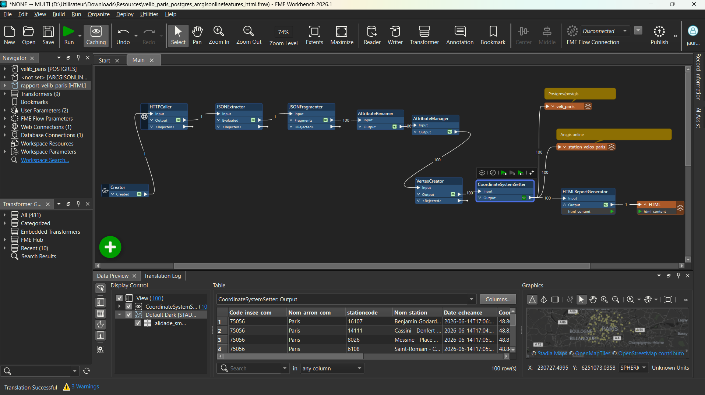
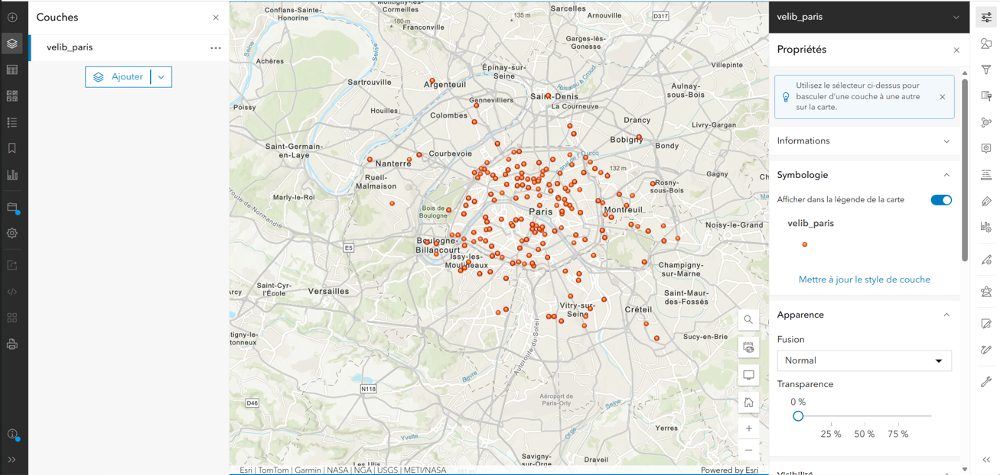
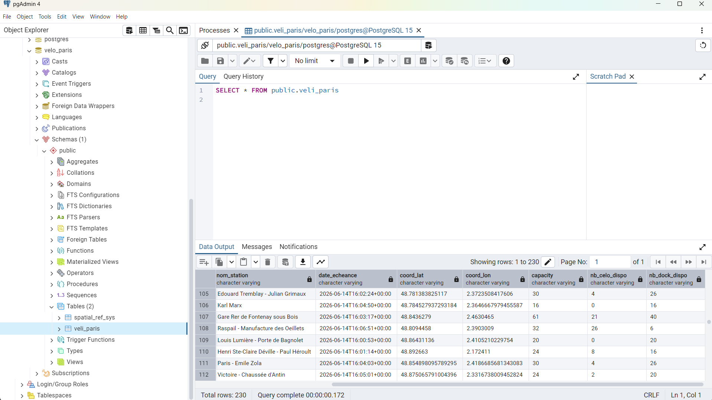
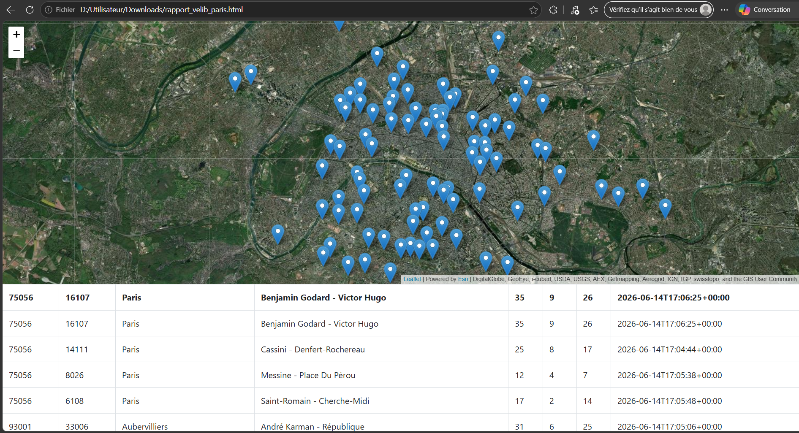

Interopérabilité de données géospatiales · FME Workbench · Mission, 2026
Publication temps réel de données Vélib' avec FME
Un pipeline publiant simultanément les stations parisiennes dans PostgreSQL/PostGIS et sur ArcGIS Online
Contexte et objectif
La disponibilité des stations Vélib' change en continu, mais les besoins de restitution ne sont pas les mêmes selon les équipes : une équipe base de données veut interroger l'historique en SQL, une équipe webmapping veut publier une carte partageable, et un simple suivi ponctuel demande un rapport lisible sans outil SIG. Reconstruire manuellement ces trois sorties à chaque rafraîchissement des données serait à la fois lent et source d'écarts entre elles. L'objectif de ce workflow est d'interroger l'API Vélib' une seule fois et de publier automatiquement le même jeu de données vers ces trois destinations en une exécution.
Démarche et outils
Le pipeline est construit sous FME Workbench :
- Connexion à l'API Vélib' via
HTTPCaller. - Extraction de la réponse JSON avec
JSONExtractor, puis fragmentation en une entité par station avecJSONFragmenter(230 stations). - Restructuration des attributs avec
AttributeRenameretAttributeManager: nom de station, code INSEE et arrondissement, capacité, vélos disponibles, places libres, horodatage de la dernière mise à jour. - Construction de la géométrie ponctuelle à partir des coordonnées (
VertexCreator) et attribution du système de coordonnées (CoordinateSystemSetter). - Export double et simultané : écriture dans une table PostgreSQL/PostGIS et publication directe d'une couche sur ArcGIS Online, à partir du même flux de données.
- Génération automatique d'un rapport HTML de suivi, combinant carte de localisation et tableau de disponibilité par station.

Résultats
Une seule exécution du workflow met à jour les 230 stations dans la base PostgreSQL/PostGIS, republie la couche correspondante sur ArcGIS Online et régénère le rapport HTML, sans qu'aucune de ces trois sorties ne nécessite de reprise manuelle. L'équipe base de données dispose ainsi d'un historique interrogeable en SQL, l'équipe webmapping d'une couche cloud toujours à jour, et un simple lien HTML suffit pour un suivi ponctuel de la disponibilité par station. Ce pipeline illustre l'intérêt de FME au-delà d'un simple outil de conversion de formats : centraliser dans un flux unique la collecte, la structuration et la diffusion multi-cibles d'une donnée qui change en continu.


